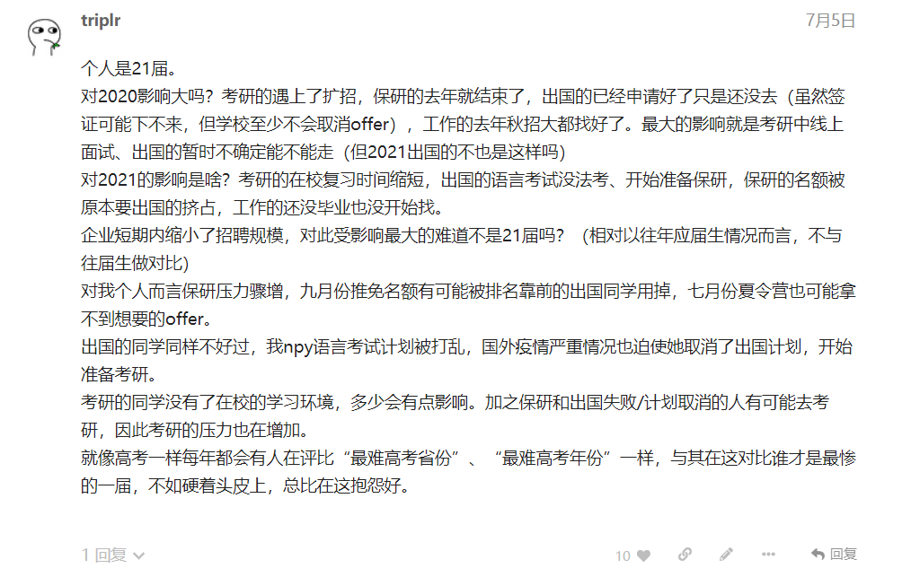
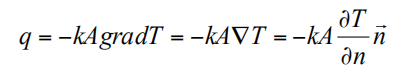
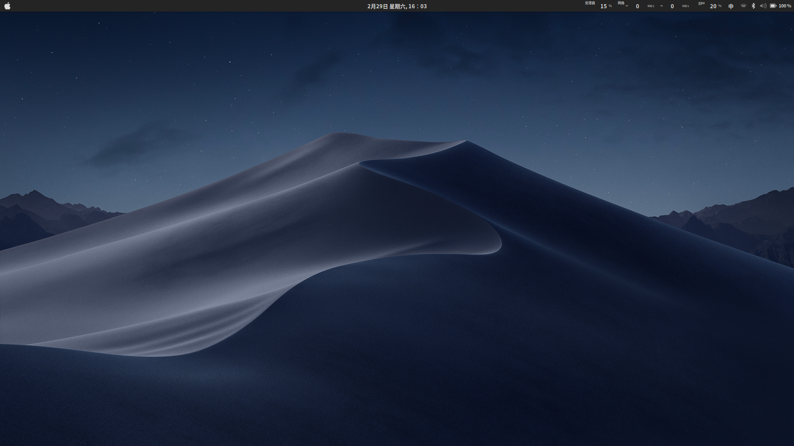

triplr的新模板计划
即将启动新模板的制作，设计稿已完成，下一步进行简要无渲染主页制作。采用滚动式的替换方法，首先自定义一套极简模板，然后再逐步实现功能，最后添加动画与样式。
即将启动新模板的制作，设计稿已完成，下一步进行简要无渲染主页制作。采用滚动式的替换方法，首先自定义一套极简模板，然后再逐步实现功能，最后添加动画与样式。
最近频繁在水源BBS上冲浪，讨论了很多热点话题，还是校园内部的论坛好啊。相比于知乎多了些实际讨论，也更容易与同学聊起来。毕竟是个校友平台，对于本校内部的一些问题也产生了激烈的讨论。因为有部门人员的入驻，间接也减少了知乎治校的情况。虽然知乎上还是有很多戾气

原计划是在暑假期间继续建设一下这个网站，包括完善后台系统、设计自己的主题等等，后面也会把自己的一些随想和个人笔记整理放上来。但谁知道暑假的事情还挺多，先把比赛和暑期实习的东西搞定后再说吧hhh
冲冲冲！

事实证明没卵用，canvas的HTML编辑器不会刷新
更新：已使用图床系统。
因为疫情的原因，一直在家，网课最近几天也要开始了，选课的时候又有很多课被延迟开放，不知道能开课的又有多少。
最近在ubuntu下解决了tensorflow平台的搭建，感觉在项目管理上比windows好到不知道哪里去了，所以就有了转为ubuntu常用的心理。
在解决了系统的nvidia显卡驱动的问题之后，又继续增加了mac
mojave的主题，这样让整个系统看起来更像是一个mac系统（虽然本质上来讲这俩系统就是同源的hhh）
即将启动新模板的制作，设计稿已完成，下一步进行简要无渲染主页制作。采用滚动式的替换方法，首先自定义一套极简模板，然后再逐步实现功能，最后添加动画与样式。
水源BBS最近频繁在水源BBS上冲浪，讨论了很多热点话题，还是校园内部的论坛好啊。相比于知乎多了些实际讨论，也更容易与同学聊起来。毕竟是个校友平台，对于本校内部
事实证明没卵用，canvas的HTML编辑器不会刷新更新：已使用图床系统。
在家好无聊因为疫情的原因，一直在家，网课最近几天也要开始了，选课的时候又有很多课被延迟开放，不知道能开课的又有多少。
更换主题最近在ubuntu下解决了tensorflow平台的搭建，感觉在项目管理上比windows好到不知道哪里去了，所以就有了转为ubuntu常用的心理。在解
这一篇是在更换Typecho之后的第一篇文章，模板也是默认模板。在前几天用的是阿里云的wordpress应用镜像，但是感觉页面不是很简洁，所以决定更换为目前的这
本页面由 Typecho 创建, 这只是个测试页面.